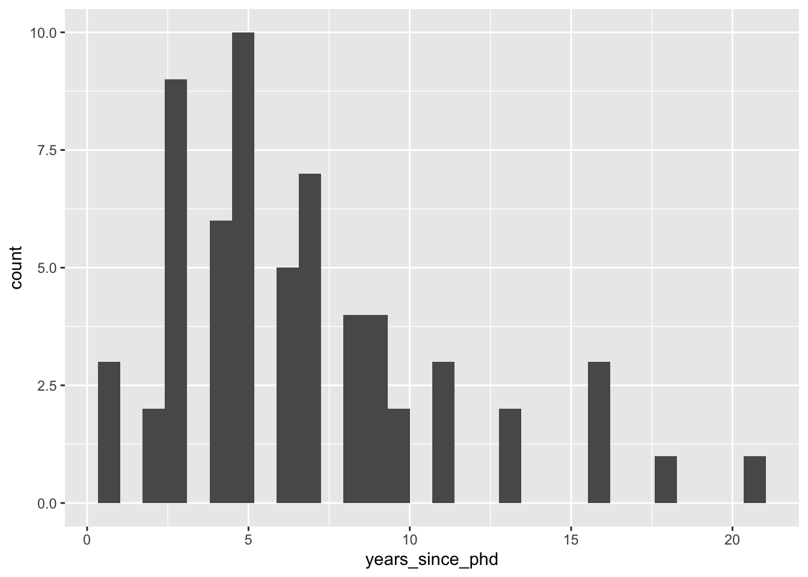
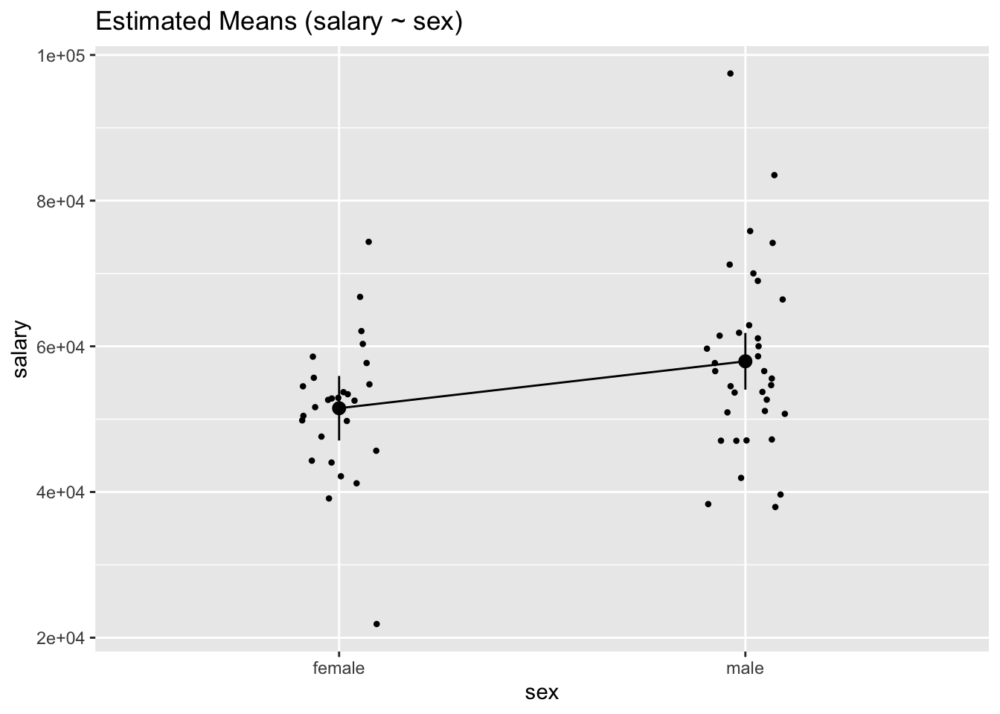

## Load packages
library(tidyverse)
library(easystats)
library(ggeffects)
## Read in data from file
yearspubs <- read_csv("yearspubs.csv")2 Regression Recap
Before jumping into generalized linear models (GLMs), we will recap important foundations of general linear models, such as simple and multiple regression. The key is that generalized linear models are useful when assumptions of general linear models no longer hold or are unreasonable.
2.1 Data Demonstration
In this data demo, we will first review loading R packages and data, then simple and multiple linear regression.
The data for this chapter is toy data about academic performance after obtaining a Ph.D. including salary information. It is composed of both continuous and categorical variables.
- Data: yearspub.csv
| Variable | Description | Values | Measurement |
|---|---|---|---|
yrs_since_phd |
Years since obtaining Ph.D. | Integer | Scale |
n_cites |
Number of Academic Citations | Integer | Scale |
salary |
Current Salary Figures | Integer | Scale |
n_pubs |
Number of Academic Publications | Integer | Scale |
sex |
Male or Female | Characters | Nominal |
2.1.1 Loading the Packages and Reading in Data
In R, packages must be installed before using them. Once installed, then they can be activated in session with the library() command.
2.1.2 Prepare Data / Exploratory Data Analysis
It is always a good first step to plot data prior to fitting any model. Here, we consider the relationship between years_since_phd and salary. Notice that, for the most part, we can see a linear relationship such that salary tends to increase with the number of additional years after obtaining a Ph.D.
## Explore salary-seniority relationship
ggplot(data = yearspubs, mapping = aes(x = years_since_phd, y = salary)) +
geom_point()
When we move to the multiple regression section, it is advantageous to recode the sex variable into a factor (i.e., as a categorical variable). We can make use of the factor() function for this purpose.
yearspubs$sex <- factor(yearspubs$sex, c("female","male"))2.1.3 Simple Regression Example
Now, we will fit a simple linear regression that regresses salary on years_since_phd using the lm() function, and consider the results output.
## Fit linear model and print parameters
fit <- lm(
formula = salary ~ years_since_phd,
data = yearspubs
)
model_parameters(fit) |> print_md()| Parameter | Coefficient | SE | 95% CI | t(60) | p |
|---|---|---|---|---|---|
| (Intercept) | 45625.47 | 2473.12 | (40678.49, 50572.46) | 18.45 | < .001 |
| years since phd | 1400.94 | 308.87 | (783.12, 2018.77) | 4.54 | < .001 |
This simple regression line is defined by the formula:
\[ y_{\hat{i}} = \beta_0 + \beta_1 x \]
2.1.3.1 Parameter Table
From the results output, we can assess each parameter:
The
intercept(\(\beta_0\)) is the estimated salary for a professor with zero years since PhD: $45113.71, 95% CI: [$40114.89, 50112.53]. This is significantly different from zero (p < 0.001).The coefficient for
years_since_phd(\(\beta_1\)) is $1400.94, 95% CI: [$783.12, $2018.77]. Therefore, for every additional year of since PhD was associated with an increase of $783.12 to $2018.77. This zero-order effect (since it is the only predictor variable) is significantly different from zero (p < 0.001) at $1400.94.
2.1.3.2 Effect Sizes
By standardizing the data and then refitting the data, we can calculate the effect size of the years_since_phd.
## Calculate effect sizes by standardizing
standardize_parameters(fit) |> print_md()| Parameter | Std. Coef. | 95% CI |
|---|---|---|
| (Intercept) | 2.30e-16 | [-0.22, 0.22] |
| years_since_phd | 0.51 | [ 0.28, 0.73] |
Using Cohen’s D guidelines, d = 0.51 which is a medium sized effect.
2.1.3.3 Model Performance
One purpose of model fitting is to demonstrate accurate predictions – given a new X, can we reasonably predict a new Y? (This is different to inference, which is how well these models explain the data).
Three popular metrics of model fit performance in service of prediction are adjusted R^2, AIC, and BIC.
## Calculate model performance indices
model_performance(fit) |> print_md()| AIC | AICc | BIC | R2 | R2 (adj.) | RMSE | Sigma |
|---|---|---|---|---|---|---|
| 1325.90 | 1326.31 | 1332.28 | 0.26 | 0.24 | 10151.69 | 10319.50 |
When comparing models, a higher adjusted R^2 is a better fit, and a lower AIC/BIC is a better fit. Here, we aren’t comparing two competing models, but it is easy to obtain these metrics with our packages.
2.1.3.4 Ploting Model Predictions
Lastly, the model predictions are easy to plot with predict_response. The grey bands show our uncertainty along the best fit line, and you can incorporate data into the plot as well with show_data = TRUE. These plots visualize the parameter estimates we assessed earlier in the parameter tables.
## Plot model-based predictions
predict_response(fit, terms = "years_since_phd") |> plot()predict_response(fit, terms = "years_since_phd") |> plot(show_data = TRUE)Data points may overlap. Use the `jitter` argument to add some amount of
random variation to the location of data points and avoid overplotting.2.1.4 Multiple Regression Example
Now, we will fit a multiple linear regression that regresses salary and sex on years_since_phd using the lm() function, and consider the results/output.
## Fit linear model and print parameters
fit2 <- lm(
formula = salary ~ years_since_phd + sex,
data = yearspubs
)
model_parameters(fit2) |> print_md()| Parameter | Coefficient | SE | 95% CI | t(59) | p |
|---|---|---|---|---|---|
| (Intercept) | 43989.01 | 2667.12 | (38652.12, 49325.91) | 16.49 | < .001 |
| years since phd | 1300.30 | 312.36 | (675.28, 1925.32) | 4.16 | < .001 |
| sex (male) | 4109.49 | 2673.09 | (-1239.35, 9458.34) | 1.54 | 0.130 |
This multiple regression is defined by the formula:
\[ y_{\hat{i}} = \beta_0 + \beta_1 x_1 + \beta_2 x_2 \] Multiple regression, therefore, allows us the ability to control the relationship of multiple predictors on the outcome variable. Statistically “controlling” for a predictors is when the shared variance between predictors is accounted for/removed so that the unique effect of any one predictor variable on the outcome variable is estimated. We then can ask the following questions:
What is the relationship between \(x_1\) and \(y\) if we hold \(x2\) at a constant value? e.g., What is the salary difference between prof A (woman, 10 years) and prof B (woman, 11 years)?
If we already know \(x2\), how much does learning about \(x1\) change our prediction of \(y\)? e.g. how much does learning that prof C is male change our prediction of their salary if we already knew they have 15 years of seniority?
2.1.4.1 Estimating Means
Recall that prior to fitting the multiple regression, we changed sex into a categorical variable using the factor() function. This is an example of dummy coding. Therefore, once we fit the multiple regression we were able to separate response values based on different factor levels.
In the case of sex, we have a binary categorical variable, so we can obtain average values of salary at each level of sex while also accounting for (i.e. controlling for) the (partial) effect of years_since_phd.
We will use the estimate_means() function to accomplish this.
gmeans <- estimate_means(fit2, by = "sex")
gmeans |> print_md()| sex | Mean | SE | 95% CI |
|---|---|---|---|
| female | 52818.46 | 1989.11 | (48838.27, 56798.66) |
| male | 56927.96 | 1742.00 | (53442.23, 60413.69) |
Marginal means estimated at sex
We can also create a plot to visualize the means.
plot(gmeans)
We can now more easily see that, across all years_since_phd values, male academics earn on average more salary than women academics. However, as the plot shows, there is variability within each factor level.
To see if this apparent difference of average salary between male and female academics is statistically significant, we can perform a contrast.
contrasts <- estimate_contrasts(fit2, contrast = "sex")
contrasts |> print_md()| Level1 | Level2 | Difference | 95% CI | SE | t(59) | p |
|---|---|---|---|---|---|---|
| female | male | -4109.49 | (-9458.34, 1239.35) | 2673.09 | -1.54 | 0.130 |
Marginal contrasts estimated at sex p-value adjustment method: Holm (1979)
Therefore, there is not a statistically significant difference in means across years_since_phd between male and female academics, p = 0.130
2.1.4.2 Moderation
Moderation, also known as interactions, asks us to consider the extent to which the effect of one predictor depends on the value on another predictor. It is up to the investigator, guided by theory and previous research, to consider if including interaction terms are relevant for the research question.
Again, with moderation we include interaction terms like so:
\[ y_{\hat{i}} = \beta_0 + \beta_1 x_1 + \beta_2 x_2 + \beta_3 x_1 x_2\] - \(beta_3\) is the slope of the interaction term (the product of two or more predictors)
We can now fit our new model with the interaction term:
## Fit linear model and print parameters
# the * (asterisk) is short form for including the interation term
fit3 <- lm(
formula = salary ~ years_since_phd * sex,
data = yearspubs
)
model_parameters(fit3) |> print_md()| Parameter | Coefficient | SE | 95% CI | t(58) | p |
|---|---|---|---|---|---|
| (Intercept) | 45072.28 | 4462.64 | (36139.34, 54005.22) | 10.10 | < .001 |
| years since phd | 1112.81 | 692.27 | (-272.92, 2498.54) | 1.61 | 0.113 |
| sex (male) | 2656.21 | 5486.15 | (-8325.51, 13637.92) | 0.48 | 0.630 |
| years since phd × sex (male) | 236.36 | 777.28 | (-1319.53, 1792.25) | 0.30 | 0.762 |
In this example, the years_since_phd by sex interaction term was not significant (p = 0.762).
We can visualize the interaction by making a marginal effects, or “spotlight”, plot.
plot(ggpredict(
model = fit3,
terms = c("years_since_phd",
"sex")
))Note that in this multiple regression / moderation model that each level of sex has a different slope. We can estimate these slopes, or the “simple” effect of years_since_phd on salary for each level of sex, with estimate_slopes(). The term “simple” is a result of adding the interaction term in the model.
estimate_slopes(fit3, trend = "years_since_phd", by = "sex")Estimated Marginal Effects
sex | Coefficient | SE | 95% CI | t(58) | p
-------------------------------------------------------------------
female | 1112.81 | 692.27 | [-272.92, 2498.54] | 1.61 | 0.113
male | 1349.17 | 353.44 | [ 641.69, 2056.65] | 3.82 | < .001
Marginal effects estimated for years_since_phd- In this moderation model, the simple slope of the
years_since_phdwas significantly different from zero for men at $1349.17, but not for women (p = 0.113).
3 Assumptions
The six assumptions of general linear models can be divided into two general areas.
Assumptions about the Formula
- Correct Functional Form
- Perfectly Measured Preditors
- No Collinearity/Multicollinearity
Assumptions about the Residuals
- Constant Error Variance
- Independence of Residuals
- Normality of Residuals
When we utilize GLMs, we are trying to do better than assume that each of these six assumption of general linear models holds. One way to test some of these assumptions visually is to use the check_model() function. As an example will apply these checks on the multiple regression model without the interaction term.
check_model(fit2)
As you can see, this is an easy way to check for assumptions. Given this model, the assumptions seem to fit well. But in the future GLM models, these assumptions will no longer be reasonable.
4 Conclusion
In this recap, we fit simple and multiple regression models with interaction terms. This is great starting point for learning about GLMs. In the future modules, we will take our understanding and interpretations of general linear models into GLMs and learn when GLMs are most appropriate, especially when assumptions do not hold.